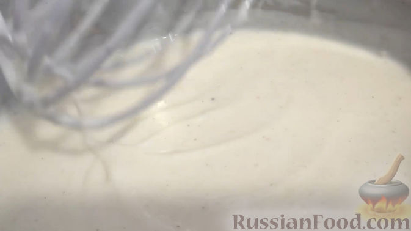
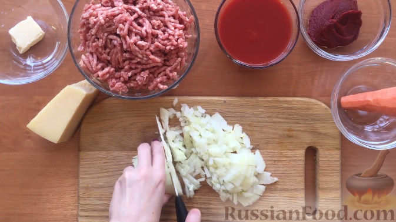
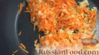
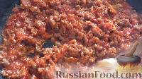
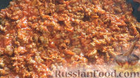
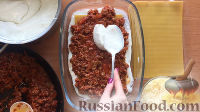
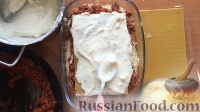
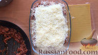

Этот рецепт лазаньи близок к классическому - с томатно-мясным соусом болоньезе и соусом бешамель, - но всё-таки это одна из упрощённых и быстрых вариаций итальянского блюда.
Состав / ингридиенты
| Белки | Жиры | Углеводы |
| 8 г. | 15 г. | 16 г. |
| 21% | 38% | 41% |

Готовим соус бешамель. В глубокой сковороде растопить сливочное масло (60 г), добавить муку и, интенсивно помешивая, влить частями горячее молоко. Приправить солью и мускатным орехом, довести до кипения, постоянно помешивая, снять с огня.

Готовим соус болоньезе. Репчатый лук мелко режем, морковь натираем на терке.

В глубокой сковороде обжариваем лук на сливочном масле до полуготовности. Добавляем к нему морковь, жарим около 5 минут.

Затем добавляем фарш, посыпаем солью и перцем, хорошо перемешиваем. Жарим на слабом огне еще около 10 минут.

Далее добавляем томатный соус и томатную пасту. Перемешиваем и готовим соус болоньезе еще 10 минут.

На дно формы выкладываем часть соуса бешамель. Укладываем на него лист лазаньи (обязательно обращайте внимание на инструкцию к готовым листам). Затем выкладываем часть соуса болоньезе. Поверх заливаем частью соуса бешамель и посыпаем тертым пармезаном.

Повторяем слои до тех пор, пока все ингредиенты не будут использованы.

Верхний слой листа лазаньи поливаем соусом бешамель и посыпаем пармезаном. Запекаем лазанью в духовке около 40 минут при 180-190 градусах до образования золотистой корочки.
Готовую лазанью вынимаем из духовки, даем постоять минут 10, а затем нарезаем на порции. Украшаем и наслаждаемся!
Вверх